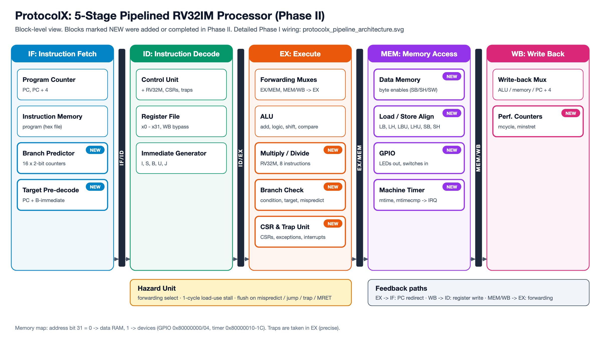
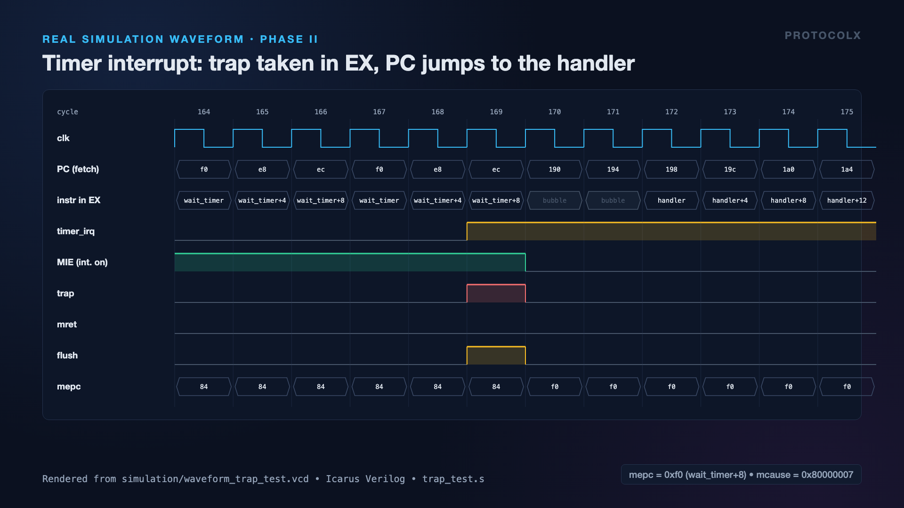
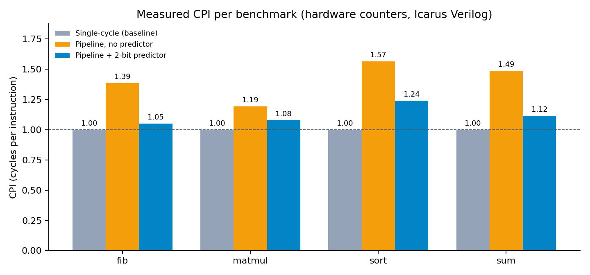

Team Members:
Department of Computer Science & Applications
Submission Date: November 2026
In Phase I we built and verified a 5-stage pipelined RISC-V (RV32I) processor with data forwarding, a load-use stall and branch flushing. In Phase II we turned it into a more complete processor and measured how good it is. We added a 2-bit dynamic branch predictor, the RV32M multiply/divide extension, byte and half-word memory access, CSRs with precise exceptions and timer/external interrupts, memory-mapped GPIO and a machine timer, and hardware performance counters. To compare fairly, we also built a single-cycle baseline from the same modules.
All features are verified in simulation (Icarus Verilog) by self-checking programs: a generated test of 234 cases covering every RV32IM instruction, a trap/interrupt test, and four benchmarks, plus the 51 Phase I checks. We used mutation testing (deliberately breaking the hardware) to show the tests can detect real bugs. The branch predictor lowers the pipeline's CPI from 1.19–1.57 to 1.05–1.24. Using the open-source FPGA flow (Yosys + nextpnr) we measured real post-place-and-route clock frequencies: with the full RV32IM unit both cores are limited to about 5 MHz by the single-cycle divider (pipeline 5.45 MHz, single-cycle 4.94 MHz); without it the pipeline reaches 62.4 MHz versus 30.4 MHz, making the benchmarks 1.65–1.95× faster in real time than the single-cycle baseline.
Index Terms — RISC-V, pipelining, branch prediction, precise exceptions, FPGA, CPI.
A pipeline only pays off if it keeps most of its stages busy. In Phase I every taken branch cost two cycles, and the core could only run integer arithmetic on whole words. Real programs need more:
Phase II has two goals:

Fig. 1. Block-level view of the Phase II core. Blocks marked NEW were added or completed in Phase II. The detailed wire-level Phase I datapath is in diagrams/protocolx_pipeline_architecture.svg.
Every pipeline register now carries a valid bit, which is 0 for bubbles (after reset, a stall or a flush). The performance counter counts only valid instructions, and interrupts are only attached to valid instructions, which have a meaningful PC.
A 16-entry table of 2-bit saturating counters (branch_predictor_2bit.v, indexed by PC[5:2]) predicts whether a branch is taken. Because our instruction memory returns the instruction in the same cycle, the IF stage can already decode the B-type immediate and compute the target PC + imm. No branch target buffer is needed. The prediction travels with the instruction. EX compares it with the real outcome; on a mismatch the PC is redirected (to the target or to PC + 4), two instructions are flushed, and the counter is updated.
Alternatives considered: static not-taken (Phase I), 1-bit history (mispredicts twice per loop), resolving branches in ID (1-cycle penalty, but comparators and forwarding into ID lengthen that stage), and gshare (more accurate, more hardware).
muldiv_unit.v implements MUL, MULH, MULHSU, MULHU, DIV, DIVU, REM and REMU in one combinational cycle. It handles the edge cases defined by the specification: division by zero returns −1 or the dividend, and overflow (−2³¹ ÷ −1) returns −2³¹ with remainder 0. Section 5 shows the cost of this simple choice: it limits the whole core to about 5 MHz.
Loads use mem_align_unit.v (select and sign/zero-extend). Stores use store_align_unit.v (byte lanes and byte enables). The data memory has four byte-write enables. Its reset loop was removed so FPGA tools can implement it as RAM instead of flip-flops.
csr_unit.v implements Zicsr and the machine-mode CSRs: mstatus, mie, mip, mtvec, mepc, mcause, mtval, mscratch, mcycle, minstret. Exceptions (ECALL, EBREAK, illegal instruction) and interrupts (timer, external) are taken when the instruction is in EX:
mepc ← PC of that instruction, and mcause ← the reason;mtvec;mepc and restores MIE.Older instructions in MEM and WB complete, so traps are precise.
Addresses with bit 31 set go to devices instead of RAM:
0x80000000;0x80000004;mtime / mtimecmp timer at 0x80000010–1C, which raises the timer interrupt.single_cycle_core.v reuses the same control unit, ALU, multiply/divide unit, memories and devices without pipeline registers, so CPI = 1 by construction. Its register file disables the write-to-read bypass, which would form a combinational loop in a single-cycle design.
| Suite | What it checks | Result |
|---|---|---|
| Phase I testbenches (8) | ALU, register file, hazard unit, arithmetic, forwarding, load-use stall, branch flush, instruction subset with exact cycle count | 51/51 pass |
| Teammates' unit tests (4) | GPIO, load alignment, branch predictor, performance counter | pass |
isa_test (generated) |
234 tests: every RV32IM instruction with edge values, CSR operations, forwarding, load-use | pass, predictor on and off |
trap_test |
ECALL, EBREAK, illegal instruction, timer and external interrupts, GPIO, precise interrupt check | pass, predictor on and off |
| 4 benchmarks | self-checking results on 3 designs | pass |
Generated tests. tools/gen_isa_test.py computes every expected value with a small Python reference model, so no answer is calculated by hand. Programs are assembled by our own assembler (tools/rvasm.py), which was checked bit-for-bit against hand-encoded programs and reference encodings.
Mutation testing. We deliberately broke the hardware and confirmed each break was caught:
This exposed and fixed two weaknesses: BNE had been untested in Phase I, and the test script printed "success" even when checks failed.
Cycle-exact cross-check. For bench_sum with prediction off: 654 instructions + 64 load-use stalls + 126 mispredictions × 2 + 4 fill cycles = 974 cycles, exactly what the hardware counter measured.

Fig. 2. Real simulation waveform (simulation/waveform_trap_test.vcd): the timer interrupt is taken on the instruction in EX (cycle 169), the younger instructions are flushed, mepc captures the interrupted PC, and fetch continues at the handler.
| Benchmark | Single-cycle cycles (CPI) | Pipeline, no predictor cycles (CPI / IPC) | Pipeline + 2-bit predictor cycles (CPI / IPC) | Mispredictions (off → on) |
|---|---|---|---|---|
| fib (Fibonacci 30) | 160 (1.000) | 222 (1.387 / 0.721) | 168 (1.050 / 0.952) | 29 → 2 |
| sum (array of 64) | 654 (1.000) | 974 (1.489 / 0.672) | 730 (1.116 / 0.896) | 126 → 4 |
| sort (bubble sort, 32) | 3973 (1.000) | 6224 (1.566 / 0.639) | 4930 (1.240 / 0.806) | 860 → 213 |
| matmul (8×8, MUL) | 8638 (1.000) | 10302 (1.192 / 0.839) | 9330 (1.080 / 0.926) | 574 → 88 |

Fig. 3. Measured CPI (from the hardware counters) for the three designs.
Findings:
sort keeps the most mispredictions, because whether two elements are swapped depends on the data.sum, 512 in matmul) and the 4-cycle pipeline fill.Vivado (for the Xilinx Artix-7 / Basys 3 named in our Phase I plan) does not run on macOS, and no board was available. We therefore used the open-source flow Yosys → nextpnr → static timing on a Lattice ECP5 LFE5U-85F. It produces real post-place-and-route timing without needing a board. The board-level top (fpga/fpga_top.v: clock, reset button, 16 switches → GPIO_IN, 16 LEDs ← GPIO_OUT) runs a demo program (fpga/fpga_demo.s) that uses every instruction type, so synthesis cannot delete unused hardware.
| Configuration | Fmax (MHz) | Critical path through | LUT4 | Flip-flops | DSP (18x18) |
|---|---|---|---|---|---|
| Pipeline (5-stage), RV32IM | 5.5 | muldiv, execution_unit | 14,964 | 2,022 | 4 |
| Single-cycle, RV32IM | 4.9 | muldiv, exec, dmem | 14,252 | 962 | 4 |
| Pipeline (5-stage), M removed* | 62.4 | dmem | 6,865 | 2,022 | 0 |
| Single-cycle, M removed* | 30.4 | dmem | 6,336 | 962 | 0 |
* M removed = multiply/divide unit replaced by a stub (fpga/muldiv_stub.v) to measure the rest of each core.
Execution time, full RV32IM cores: time = cycles / Fmax
| Benchmark | Single-cycle | Pipeline + predictor | Speed-up |
|---|---|---|---|
| fib | 32.4 µs | 30.8 µs | 1.05× |
| matmul | 1,748.6 µs | 1,711.9 µs | 1.02× |
| sort | 804.3 µs | 904.6 µs | 0.89× |
| sum | 132.4 µs | 133.9 µs | 0.99× |
Execution time, cores without the M unit (benchmarks that use MUL excluded): time = cycles / Fmax
| Benchmark | Single-cycle | Pipeline + predictor | Speed-up |
|---|---|---|---|
| fib | 5.3 µs | 2.7 µs | 1.95× |
| sort | 130.5 µs | 79.0 µs | 1.65× |
| sum | 21.5 µs | 11.7 µs | 1.84× |
What the numbers show:
muldiv_unit for both cores, so pipelining cannot help: 5.45 vs 4.94 MHz. With CPI above 1, the pipeline is about as fast as the single-cycle core here (0.89–1.05×). The unit is also more than half of the logic: 14,964 LUT4s with it, 6,865 without.Consequence for Phase III: replacing the combinational divider with a multi-cycle one (stalling the pipeline for about 32 cycles per divide) should let the full RV32IM pipeline approach the ~62 MHz of the M-less core. This is an expectation, not a measurement.
Method: fpga/run_fmax.sh (Yosys synth_ecp5, nextpnr-ecp5 --85k --package CABGA381, seed 1, timing-driven placement), summarised by fpga/summarize.py. Benchmark cycle counts come from the simulations in Section 4 (matmul is excluded for the M-removed cores because it uses MUL). These are ECP5 numbers; a Xilinx Artix-7 result would differ in absolute MHz.
| Problem | Cause | Solution |
|---|---|---|
| Design simulated correctly but did not synthesize | Reset and flush tested together (!rst_n OR flush) inside an asynchronous-reset block (pipe_id_ex, and again later in pipe_ex_mem) |
Separate the reset branch from the synchronous flush branch |
| Test script reported success with failing checks | vvp exits 0 even when checks fail |
The script searches the log for failures and exits 1 |
| Synthesis reported only 103 cells for a CPU | An empty instruction ROM made every instruction constant, so the tools deleted the datapath | Black-box the instruction memory for area runs; use a real demo program for FPGA runs |
| FPGA run optimised away the whole CPU | The simulation-only NOP-fill loop in instruction_memory.v became memory write ports in synthesis, so the program was lost |
NOP fill is now inside `ifndef SYNTHESIS |
| Trap test timed out | The handler used t5/t6, which are x30/x31 (our result-address and test-number registers) |
The handler uses a6/a7 |
| Instruction count off by one | The testbench sampled signals exactly at the clock edge, before flip-flops update | Sample 1 ns after the edge; three independent counts now agree |
| Timer compare on the longest path | 64-bit mtime ≥ mtimecmp fed the trap and redirect logic in the same cycle |
Register timer_irq (1-cycle delay, invisible to software) |
Completed in Phase II: every item planned in the Phase I report except the board demonstration, plus measured CPI/IPC, a single-cycle baseline, and post-place-and-route Fmax.
Not done / future work:
fpga/fpga_top.v is ready for a board.riscv-arch-test compliance suite.Taken from the project's git history:
| Member | Phase II contribution |
|---|---|
| Naveen Kumar | Integration of all Phase II features into the core; RV32M unit; CSR/trap unit; timer; store alignment; single-cycle baseline; assembler and generated tests; benchmarks; synthesis and FPGA flow; documentation |
| Aditya Raj | 2-bit branch predictor (branch_predictor_2bit.v) and its unit test |
| Archit Mamodiya | Hardware performance counter (perf_counter.v) and its unit test |
| Shagun Vishnoi | Byte/half-word load alignment unit (mem_align_unit.v) and its unit test |
| Ritik Ranjan | Memory-mapped GPIO unit (gpio_unit.v) and its unit test |
[1] A. Waterman and K. Asanović, "The RISC-V Instruction Set Manual, Volume I: Unprivileged ISA," Version 20191213, RISC-V Foundation, Dec. 2019.
[2] A. Waterman, K. Asanović and J. Hauser, "The RISC-V Instruction Set Manual, Volume II: Privileged Architecture," Version 20211203, RISC-V International, 2021.
[3] D. A. Patterson and J. L. Hennessy, Computer Organization and Design: The Hardware/Software Interface (RISC-V Edition), Morgan Kaufmann, 2017.
[4] J. L. Hennessy and D. A. Patterson, Computer Architecture: A Quantitative Approach, 6th ed., Morgan Kaufmann, 2019.
[5] J. E. Smith, "A Study of Branch Prediction Strategies," in Proc. 8th Annu. Int. Symp. Computer Architecture (ISCA), 1981, pp. 135–148.
[6] C. Wolf, "Yosys Open SYnthesis Suite." [Online]. Available: https://yosyshq.net/yosys/
[7] YosysHQ, "nextpnr — a portable FPGA place and route tool." [Online]. Available: https://github.com/YosysHQ/nextpnr